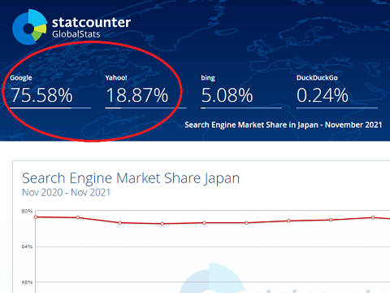

検索エンジンに登録申請をしましょう
ホームページを作成したあとは、検索エンジンにサイトの登録申請をしておきましょう。検索エンジンに登録されると、定期的にクローラーロボットが巡回してくれるようになり、検索結果で表示されやすくなります。
この検索エンジンには、GoogleやBingをはじめ、ロシアのYandexや中国のbaidu、Sogou、韓国のNAVER、フランスのQwantify、あるいは画像検索のPinterestなどがあります。
このなかで、日本での検索シェアが高いのはGoogleとYahoo!です。

ヤフーは2010年まで独自の検索システムであるYST(※Yahoo Search Technology)を採用していたため、それぞれに別に登録する必要がありました。
けれども、2010年からはヤフーもGoogleの検索システムを採用しているため、GoogleとYahoo!ではほぼ同じ検索結果が返ってきます。そのため、Googleだけに登録されていれば特に問題はありません。
一方、Bingは違う検索システムのため、全く別の検索結果が返ってきますが、シェアが5％程度のため、それほど気にする必要はないかと思います。ただ、世界的にはある程度のシェアがあるため、一応はマイクロソフトのBingにも登録しておくとよいでしょう。
GoogleやBingのサイト登録の申請先
検索エンジンのクローラーロボットは、リンクをたどってページをインデックスしていくため、あなたのホームページが他サイトからリンクされていたら、いずれは自動的に登録されるとは思います。
けれども、作りたてのホームページの場合はどこからもリンクされておらず、また無料ブログサービスのようなポータル機能からの巡回もないため、直接、検索エンジンへ登録の申請をしておくとよいでしょう。
この検索エンジンへのサイト登録についてですが、以前まではネット上からURLを送信するだけで巡回してもらえました。
けれども、最近では「Google Search Console」や「Bing ウェブマスターツール」などでサイトの所有権を確認したのち、基本的にはサイトマップを送信することでインデックスを促進する形になっています。
コンテンツをGoogleに送信
（※Search Consoleに登録して所有権を確認する方法になりました。）bingに登録終了
（※Bing - Web マスター ツールへのログインが必要になりました。）Baiduに登録（※検索サービス終了）Alexaに登録（※終了）Yahoo! JAPAN - 検索結果に表示させる方法（※Googleへ移行）
もしサイトのページ数が少なく、サイトマップの作成が面倒な場合には、サイドバーの「URL検査」ツールから簡単に申請するとよいでしょう。
また、Googleにページが登録されているかどうかを確認するためには、「site:ドメイン名」で検索すると確認することができます。
例えば、当サイトの場合、「125件」がヒットしますので、125ページがインデックスされています。
ただ、深い階層のページや新規のサイトの場合は全てのページがインデックスされるとは限りませんので、気長に運営していくことをおすすめします。